Real output from proc-trace-exec. Colors rendered as-is from the terminal.
Pass a command after the flags to trace only its subtree. The -t flag adds exit status and wall-clock timing to each process — making it easy to spot which subprocess is slow or failing.

Run without a command to trace all exec()s on the machine. The -u flag shows the owning user for each process. Root processes appear in red, normal users in green, service accounts in amber — matching the terminal color output.

Watch exactly what your build system does. See parallelism, identify missing dependencies, or find which step takes longest.
91100+ <root> make -j4 91101+ <root> cc -O2 -c src/conn.c -o build/conn.o 91102+ <root> cc -O2 -c src/netlink.c -o build/netlink.o 91103+ <root> cc -O2 -c src/depth.c -o build/depth.o 91104+ <root> cc -O2 -c src/output.c -o build/output.o 91104- <root> cc exited status=0 time=0.091s 91103- <root> cc exited status=0 time=0.102s 91101- <root> cc exited status=0 time=0.118s 91102- <root> cc exited status=0 time=0.134s 91105+ <root> ld -o proc-trace-exec build/*.o 91105- <root> ld exited status=0 time=0.031s 91100- <root> make exited status=0 time=0.298s
Use -d to add working directories. Watch a package install reveal its full exec tree, including helper scripts, post-install hooks, and any surprise network calls.
62001+ <root> /tmp/install % bash install.sh 62002+ <root> /tmp/install % id 62002- id exited status=0 time=0.001s 62003+ <root> /tmp/install % curl -fsSL https://releases.example.com/v2.1/binary 62004+ <root> /tmp/install % install -m 755 binary /usr/local/bin/ 62004- install exited status=0 time=0.001s 62005+ <root> /etc/systemd/system % systemctl enable --now binary.service 62005- systemctl exited status=0 time=0.043s 62003- curl exited status=0 time=1.204s 62001- bash exited status=0 time=1.251s
Pass comma-separated PIDs to -p to watch several processes simultaneously — useful for monitoring a cluster of nginx workers, a pool of PHP-FPM processes, or any group of related daemons.
73400+ <www-data> sh -c '/usr/lib/nginx/modules/load.sh' 73401+ <www-data> /usr/lib/nginx/modules/load.sh 73401- load.sh exited status=0 time=0.003s 73400- sh exited status=0 time=0.004s 73410+ <www-data> sh -c 'lua /etc/nginx/scripts/auth.lua' 73411+ <www-data> lua /etc/nginx/scripts/auth.lua 73411- lua exited status=0 time=0.011s 73410- sh exited status=0 time=0.012s